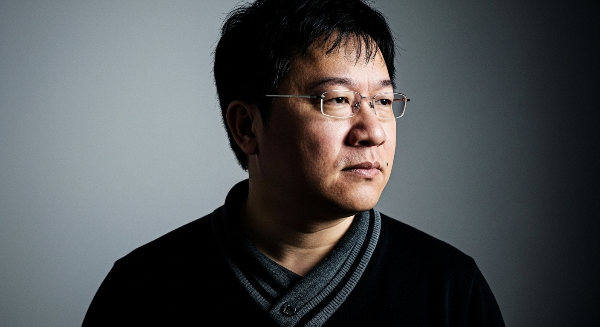

AI_CORE_V2
BRUNO CHEN
Neural Marketing & AI Strategic Architect

Visionary Intelligence
定義未來行銷的運算邏輯
我們正處於行銷領域的奇點。我不僅僅是規劃 AI，而是為您的企業構建一個具備自我優化能力的數據神經系統。從進入中國市場的戰略佈局到短影音的內容生成，每一份決策都基於深度學習的洞察。
99%
AI 整合精準度
24/7
數位行銷自動化
SYSTEM_CAPABILITIES
專業服務體系
STATUS: OPTIMAL
LATENCY: 12ms
LATENCY: 12ms
01 企業 AI 規劃
導入 LLM 與生成式 AI 框架，重建企業內部工作流，將人力資產轉化為高產出的運算節點。
02 數位網路行銷
運用演算法預測市場趨勢，透過精準投放與 SEO 策略，在數位叢林中建立強大的品牌佔有率。
03 大陸市場跨境行銷
突破流量圍牆，針對大陸獨特生態進行深度規劃。從技術合規到內容在地化，助您快速著陸。
04 短影音與劇本策劃
數據化劇本創作流程。利用短影音的高爆發力，在極短時間內抓住受眾注意力，實現高轉換。